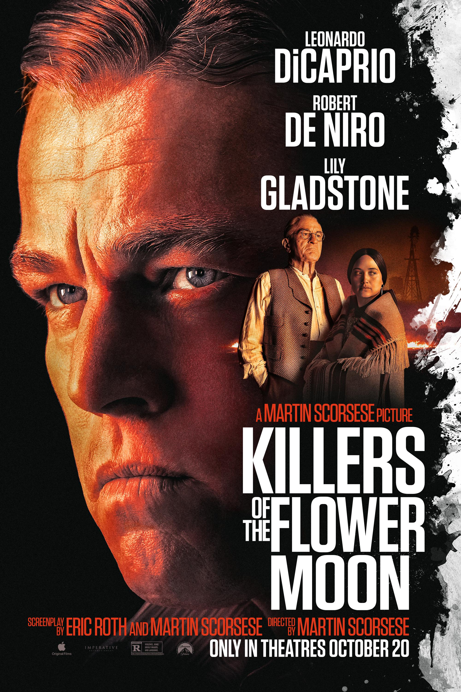

Killers of the Flower Moon
 style="width: 150px;">
Release Year: 2023
Director: Martin Scorsese
Rating: ★★★★☆
When oil is discovered in 1920s Oklahoma under Osage Nation land, the Osage people are murdered one by one—until the FBI steps in to unravel the mystery.
Lame, amateur film. A documentary would have been more fitting, instead scorsese makes an old man's film that has no head nor tail.
Contrary to what is being said here, the issue with it is specifically how it presents the criminals as mere criminals for hours, that is the function of a documentary; function because the film does not seem to aim higher than being a mere recitation of a book about an investigation, so much that everything else, including elemental artistic concepts like drama and sound, are laid all the way back. Not to leave room for the characters to elaborate, simply to insist upon their nature by repeating scenes (and errors).
Can you find the wolves in the picture ?
Sadly yes, that is the problem. They are not credible as wolves, they are a pack of hounds that bark endlessly all over the film. The promised story and, ironically, its veracity, are not delivered, at the end the feeling is to have been witness to a making of, a collection of scenes in beautiful sets, that aren't held together by any form of dramatic coherence, let alone a particular artistic vision, which scorsese hasn't been capable of creating since the 90s.
It is abundantly clear there was a correct effort to suppress that specific form of dramatization by presenting a figure of the central righteous white character who comes to serve justice and hold his counterparts accountable for their crimes against victimized native Americans. Yet what is the offered alternative by Scorsese ? An indigestible concentration of shots that barely holds together, and certainly does not hold ground in reality
An artist of his caliber, so capable of understanding individuals' struggles of crime and faith shouldn't step into the territory of representation of groups to whom he does not even belong, the crimes committed against them, particularly if it's to create a mere audio-visual transcription of a literary text, and turning all the characters to ridicule.
A fresco of the inherent nature of the U.S., the crimes upon which they were built isn't even offered, in what feels like a damn shame.
Citizen Kane
.jpg) style="width: 150px;">
style="width: 150px;">
Release Year: 1941
Director: Orson Welles
Rating: ★★★☆☆
When a famous tycoon utters a mysterious word before dying, a journalist embarks on a journey to uncover the secret behind it.
A toast, Jedediah, to love on my terms. Those are the only terms anybody ever knows... his own.